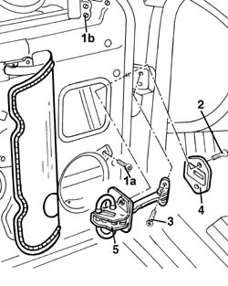

7005A28 front side door limiter- repair or replace
- Path
- Procedures > 70 FITTINGS > 7005 PASSENGER COMPARTMENT FRONT SIDE DOORS > 7005A front side door assembly > 7005A28 front side door limiter- repair or replace
- Kind
- repair procedure (removal / refitting; the operation number is the code)
- Applies to
- all engines; all production periods
- Interactive page
- https://sloeber94.github.io/elrnDB-a156/en/#/3238564
Applies to: all engines; all production periods
 Removing
Removing
 Refitting
Refitting7005C44 interior handle panel - r r
7005E38 front side door interior handle-r r
7005E12 corner cover of one front side door, lh or rh r r
7005E22 l/h or r/h front door panel radio grille (one) - r+r
7005E11 lh or rh front door inner panel - r+r with fouling parts removed
7005A04 front side door water guard protection - r r or replace with door panel removed
1. Undo the lower bolt (1a) and loosen the upper bolt (1b) for the window front guide.
2. Unscrew the bolts securing the limiter to the door.
3. Undo the bolt securing the door check strap to the body.
4. Remove the seal.
5. Remove the door opening limiter.

Applies to: all engines; all production periods
Refitting
RemovingCheck that the check strap and seal are not damaged.
Fit the check strap in its housing with the seal.
Tighten the bolts fixing the check strap, both to the door and to the bodyshell.
Tighten the bolts fixing the window front guide.
7005A04 front side door water guard protection - r r or replace with door panel removed
Lubricate the check strap with the specified product.
 | Type | Component | Name | Qty. |
|---|---|---|---|---|
- | Grease | REAR DOOR OPENING LIMITER | MR2/CX FIAT | - |
7005E11 lh or rh front door inner panel - r+r with fouling parts removed
7005E22 l/h or r/h front door panel radio grille (one) - r+r
7005E12 corner cover of one front side door, lh or rh r r
Topics linked from this page (7)
- 5570T90 front speaker - r r
- 7005A04 front side door water guard protection - r r or replace with door panel removed
- 7005C44 interior handle panel - r r
- 7005E11 lh or rh front door inner panel - r+r with fouling parts removed
- 7005E12 corner cover of one front side door, lh or rh r r
- 7005E22 l/h or r/h front door panel radio grille (one) - r+r
- 7005E38 front side door interior handle-r r